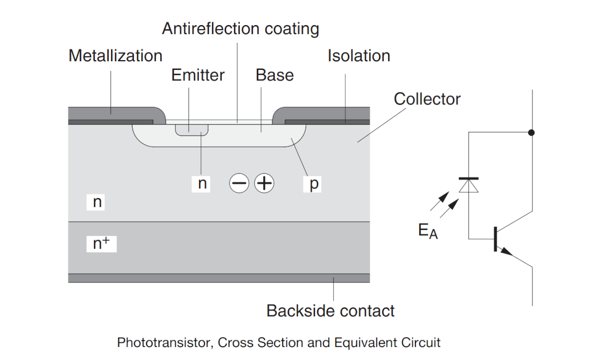
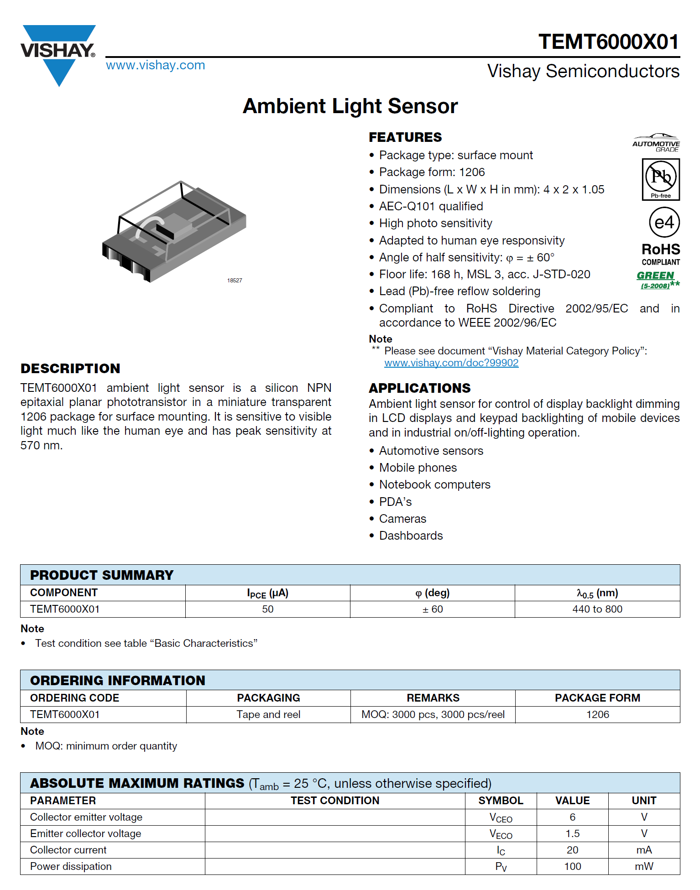
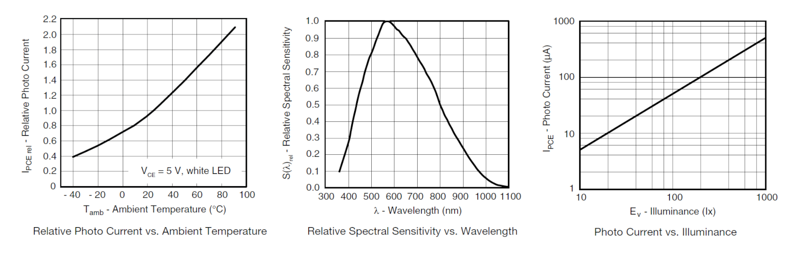
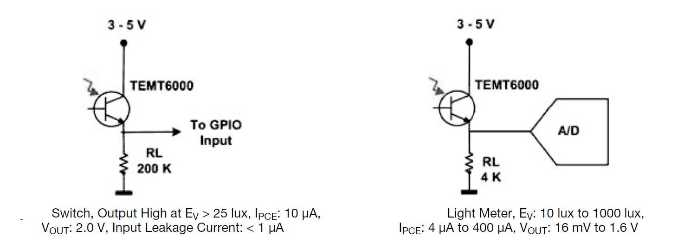
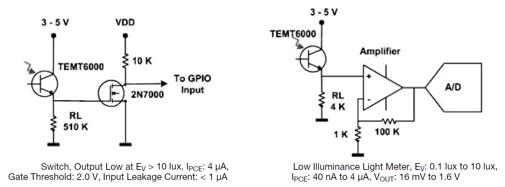
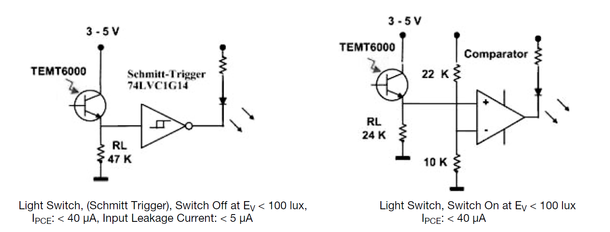
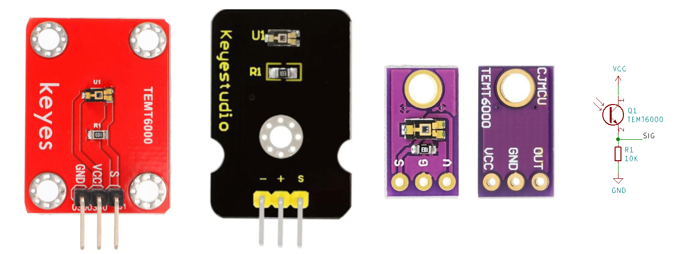

TEMT6000 Analog Light Sensor#
▷ Vishay TEMT6000#
ในบทความนี้กล่าวถึง เซนเซอร์แสงที่มีไอซี TEMT6000 ของบริษัท (Vishay Semiconductors) ให้สัญญาณเอาต์พุตเป็นแบบแอนะล็อก
เซนเซอร์แสงเพื่อใช้ในการตรวจจับการเปลี่ยนแปลงความเข้มแสงแวดล้อม (Ambient Light Sensor) สามารถจำแนกได้หลายประเภท
- จำแนกตามสัญญาณเอาต์พุต เช่น เซนเซอร์แสงที่ให้เอาต์พุตเป็นสัญญาณแอนะล็อก (แรงดันไฟฟ้า) และเซนเซอร์แสงที่ให้ข้อมูลดิจิทัล เชื่อมต่อสื่อสารข้อมูลด้วยบัส I2C เป็นต้น
- จำแนกตามช่วงความยาวคลื่น หรือ สเปคตรัมของแสง ซึ่งจะส่งผลต่อการตอบสนองของเซนเซอร์ (Spectral Sensitivity) เช่น ช่วงแสงที่มองเห็นได้ด้วยตาเปล่า ช่วงแสงอินฟราเรด เป็นต้น
เซนเซอร์แสงบางชนิดมี "โฟโต้ไดโอด" (Photodiode) เป็นตัวรับแสงหรือโฟตอน (Photons) เมื่อเซนเซอร์ได้รับแสงผ่านช่องรับแสงไปยังบริเวณที่เป็นสารกึ่งตัวนำ จะทำให้เกิดกระแสไฟฟ้า (Photo Current) โดยทั่วไป ก็อยู่ในระดับไมโครแอมป์ (uA) และปริมาณกระแสไฟฟ้าที่เกิดขึ้น ก็ขึ้นอยู่กับระดับความเข้มแสงที่ได้รับ (Illuminance: Lux)
การแปลงพลังงานแสงให้เป็นสัญญาณไฟฟ้า จึงต้องมีวงจรรวมทำหน้าที่ในส่วนที่เรียกว่า "ทรานสดิวเซอร์" (Transducer) เพื่อแปลงพลังงานจากโฟตอนให้เป็นกระแสไฟฟ้าและแปลงเป็นแรงดันไฟฟ้าตามลำดับ และอาจจะมีการขยายสัญญาณแอนะล็อกดังกล่าวในลำดับถัดไป ถ้าเซนเซอร์แสงให้เอาต์พุตเป็นข้อมูลแบบดิจิทัล ก็จะต้องมีวงจร ADC (Analog-to-Digital Converter) และส่วนเชื่อมต่อแบบดิจิทัล เช่น เพื่อเชื่อมต่อกับไมโครคอนโทรลเลอร์ เป็นต้น
ตัวอย่างไอซีเซนเซอร์ประเภทนี้ได้แก่
เซนเซอร์บางประเภท ก็มี "โฟโต้ทรานซิสเตอร์" (Phototransistor) เป็นตัวรับแสง เช่น ไอซี TEMT6000 TEMT6000 มีโฟโต้ทรานซิสเตอร์ เป็นตัวรับแสง ทำงานคล้ายกับทรานซิสเตอร์รอยต่อคู่แบบ NPN แต่จะมีกระแสไหลที่ขาเบสเกิดขึ้นจากการรับแสงโฟตอน ทำให้ความต้านทานเปลี่ยนแปลงระหว่างขา C (คอลเลกเตอร์) กับ E (อีมิตเตอร์) หรือนำไฟฟ้าได้ และมีกระแสไหล (Photo-Transistor Current: ) ระหว่างขาทั้งสองได้ภายใต้เงื่อน
ตัวอย่างของโฟโต้ทรานซิสเตอร์ที่มีตัวถังแบบ Radial T1 3/4 ได้แก่
- Vishay TEPT5600 (440 ~ 800 nm)
- OSRAM SFH 3310 (350 ~ 970 nm)
- OSRAM SFH 300 FA (730 ~ 1120 nm)

รูป: แบบจำลองภาพตัดขวางของโฟโต้ทรานซิสเตอร์และโมเดลสำหรับวงจรอิเล็กทรอนิกส์ (Source: Vishay)

รูป: ข้อมูลจากเอกสารข้อมูล (Datasheet) ของผู้ผลิต (Source: Vishay)

รูป: ข้อมูลจากเอกสารข้อมูลของผู้ผลิต (Source: Vishay)
รูปกราฟหรือไดอะแกรมจากซ้ายไปขวา
- กราฟแรกแสดงความสัมพันธ์ระหว่างปริมาณแสงโฟตอนเมื่ออุณหภูมิแวดล้อมสูงขึ้น
- กราฟที่สองแสดงให้เห็นช่วงความยาวคลื่นที่มีผลต่อการตอบสนองของเซนเซอร์แสง ซึ่งจะเห็นได้ว่า มีการตอบสนองต่อแสงที่มีความยาวคลื่นได้ดีสุด ในช่วงประมาณ 570 นาโนเมตร
- กราฟที่สามแสดงให้เห็นการเพิ่มขึ้นของปริมาณแสงโฟตอน () เมื่อความเข้มแสงเพิ่มขึ้น () ในช่วง 10..1000 Lux ซึ่งมีความสัมพันธ์เป็นแบบเชิงเส้น
ตัวอย่างการนำไอซี TEMT6000 ไปใช้งาน เช่น การใช้งานเป็นสวิตช์เปิด-ปิด ตามการเปลี่ยนแปลงของความเข้มแสง โดยทั่วไป ก็จะนำ TEMT6000 มาต่ออนุกรมกับตัวต้านทาน เช่น 10k และใช้งานในลักษณะเป็นวงจรแบ่งแรงดันไฟฟ้า เมื่อมีกระแสไหล ก็จะทำให้เกิดแรงดันตกคร่อมที่ตัวต้านทานดังกล่าวและนำไปใช้เป็นสัญญาณเอาต์พุต
ถ้าต้องการให้ได้เอาต์พุตเป็นดิจิทัล ก็นำไปต่อกับไอซีเปรียบเทียบแรงดัน (Voltage Comparator) หรือถ้าจะใช้เป็นสัญญาณแอนะล็อก ก็ต้องอ่านค่าด้วยวงจร ADC เป็นต้น

รูป: ตัวอย่างวงจรสำหรับการใช้งานโฟโต้ทรานซิสเตอร์เป็นสวิตช์ไฟฟ้า (ซ้ายมือ) และการสร้างสัญญาณแอนะล็อกให้วงจร ADC (ขวามือ)

รูป: ตัวอย่างการต่อวงจรทรานซิสเตอร์ (2N7000) N-MOSFET เป็นสวิตช์ไฟฟ้าและขับกระแสได้มากขึ้น (ซ้ายมือ) และการต่อวงจร OpAmp เพื่อขยายแรงดันไฟฟ้าก่อนนำไปใช้กับวงจร ADC (ขวามือ)

รูป: ตัวอย่างการต่อวงจรผ่านไอซี Schmitt-Trigger เพื่อใช้งานเป็นสวิตช์ไฟฟ้า (ซ้ายมือ) และการต่อใช้งานร่วมกับวงจรเปรียบเทียบแรงดันไฟฟ้า (ขวามือ)

รูป: ตัวอย่างโมดูลเซนเซอร์ TEMT6000 ที่มีให้เลือกใช้งาน (มีตัวต้านทาน 10k) สามารถใช้แรงดันไฟเลี้ยงได้ทั้ง +5V และ +3.3V
▷ กล่าวสรุป#
บทความนี้ได้นำเสนอการใช้งานโมดูลที่มีไอซี TEMT6000 ซึ่งเป็นเซนเซอร์แสงแบบแอนะล็อก สำหรับการตรวจจับการเปลี่ยนแปลงความเข้มแสงแวดล้อม
This work is licensed under a Creative Commons Attribution-ShareAlike 4.0 International License.
Created: 2023-09-23 | Last Updated: 2022-09-23